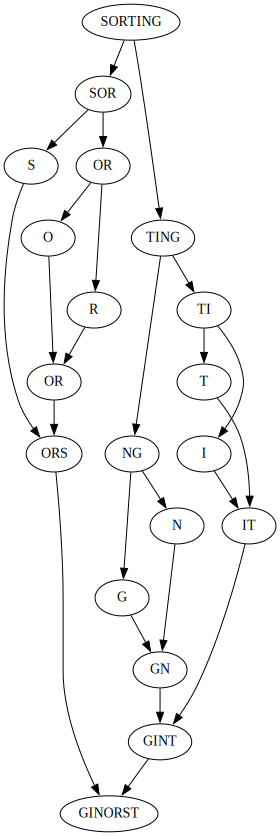
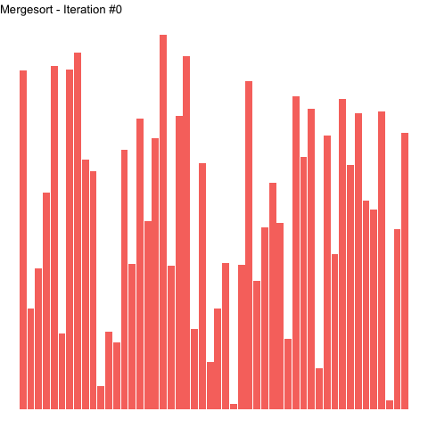

Mergesort

Figure 1: Using mergesort to sort the letters of the word “SORTING”.
Description
Mergesort is a divide-and-conquer sorting technique, wherein a larger problem is divided and the resulting sub-problem is solved. The general mergesort strategy is as follows:
- Recursively divide the items to be sorted until no further division is possible.
- Merge the two halves of the prior division, putting elements in order as the halves are merged. This is the step where all of the heavy lifting is done.
Looking at the graph above, the top half shows the division of the word “SORTING” until there are only individual letters left. The letters (length-1 arrays) are subsequently merged in order into larger arrays. Merging continues until the original inputs are realized, now in sorted order. This is depicted in the animation below, where left-most elements in a numerical array are put in order prior to those on their right. The highlighted elements for each iteration show how the algorithm proceeds in a left-to-right fashion.

Figure 2: Sorting an array with mergesort. Highlighted elements are those undergoing sorting in a given iteration.
Complexity
Recursive bisection of an array down to a single element has \(O(\ln(n))\) complexity. Each merging step iterates over a particular array once, i.e. \(O(n)\) complexity. Thus, the mergesort algorithm has a complexity of \(O(n\lg(n))\).
Implementation
The python mergesort implementation shown here favors readability and understandability over any performance concerns. There are several list-copying operations that could be avoided by passing around a single list and keeping track of element indices. I feel this obscures relevant algorithmic details, and present things in a form easiest for me to understand.
Two opposing helper functions are defined:
bisectsplits a given array, returning a tuple of the two halves.mergetakes two already sorted arrays and merges them in order to a single array.
def bisect(array): """ Split an array down the middle, return both halves. >>> bisect([5, 4, 3, 2, 1]) ([5, 4], [3, 2, 1]) >>> bisect([13, 42]) ([13], [42]) """ middle = len(array) // 2 return array[0:middle], array[middle : len(array)]
def merge(left, right): """ Merge two sorted arrays into a single sorted array. >>> merge([1, 7, 13], [0, 3, 4, 10]) [0, 1, 3, 4, 7, 10, 13] """ merged = [] while left and right: if left[0] < right[0]: merged.append(left.pop(0)) else: merged.append(right.pop(0)) while left: merged.append(left.pop(0)) while right: merged.append(right.pop(0)) return merged
merge_sort coordinates the helper functions and is responsible for recursive division and merging.
def merge_sort(array): """ Sort an array using the mergesort algorithm. >>> merge_sort([13, 42, 8, 0, 2, -56]) [-56, 0, 2, 8, 13, 42] >>> merge_sort(['s', 'o', 'r', 't', 'i', 'n', 'g']) ['g', 'i', 'n', 'o', 'r', 's', 't'] """ if len(array) > 1: left, right = bisect(array) left = merge_sort(left) right = merge_sort(right) return merge(left, right) return array
Tracking Sorting Progression
The following class is used to track the progression of sorting which can be used to visualize how sorting evolves.
import pandas as pd class MergeSorter(object): """ Helper class to track mutations of mergesort. """ def __init__(self, data): self._data = data self._snapshots = [] self._sorted = False for idx, value in enumerate(self._data): self._snapshots.append( { "position": idx, "value": value, "left": False, "right": False, "iteration": 0, } ) self._iteration_count = 1 @property def data(self): return self._data @data.setter def data(self, new_data): """ Ensures a "sorted" state is invalidated on data change. """ self._data = new_data self.sorted = False @property def snapshots(self): return pd.DataFrame.from_records(self._snapshots) def sort(self, left_idx=-1, right_idx=-1): """ Sort self.data using the mergesort algorithm. """ if left_idx == -1 and right_idx == -1: left_idx, right_idx = 0, len(self._data) - 1 if left_idx < right_idx: mid_idx = (left_idx + right_idx) // 2 self.sort(left_idx, mid_idx) self.sort(mid_idx + 1, right_idx) self._merge(left_idx, mid_idx, right_idx) def _doctest_merge_sort(self): """ Helper function with return value to doctest merge_sort. >>> MergeSorter([13, 12, 5, 3, 5, 4])._doctest_merge_sort() [3, 4, 5, 5, 12, 13] """ if not self._sorted: self.sort() return self.data def _merge(self, left_idx, mid_idx, right_idx): """ Merge two ordered sub-arrays in a single ordered subarray. """ if right_idx - left_idx < 1: # no work to do with a length 1 subset return left = self._data[left_idx : mid_idx + 1] right = self._data[mid_idx + 1 : right_idx + 1] subset_idx = left_idx l = r = 0 while l < len(left) and r < len(right): if left[l] < right[r]: self._data[subset_idx] = left[l] subset_idx += 1 l += 1 else: self._data[subset_idx] = right[r] subset_idx += 1 r += 1 while l < len(left): self._data[subset_idx] = left[l] subset_idx += 1 l += 1 while r < len(right): self._data[subset_idx] = right[r] subset_idx += 1 r += 1 self._snapshot(left_idx, mid_idx, right_idx) def _snapshot(self, left_idx, mid_idx, right_idx): """ Copy self.data, indicating if each element is currently being sorted. """ for idx, value in enumerate(self._data): self._snapshots.append( { "position": idx, "value": value, "left": idx >= left_idx and idx <= mid_idx, "right": idx > mid_idx and idx <= right_idx, "iteration": self._iteration_count, } ) self._iteration_count += 1